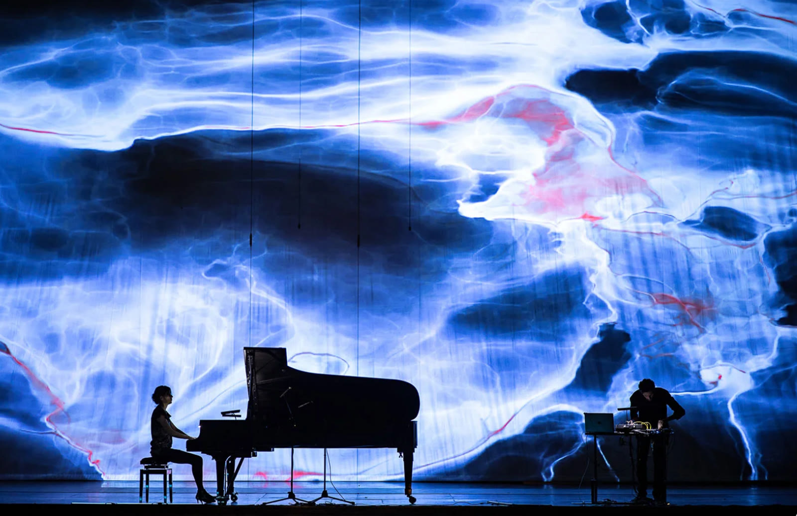
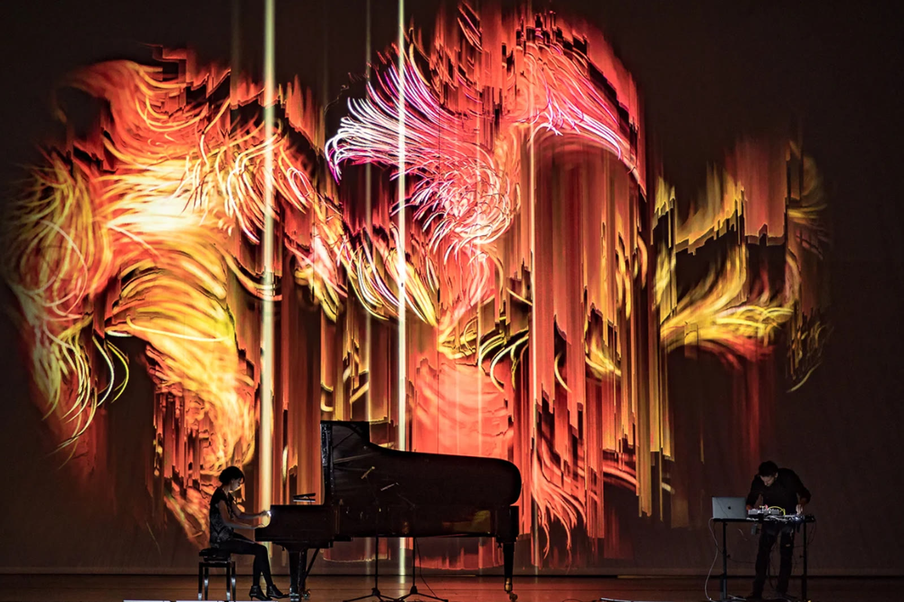
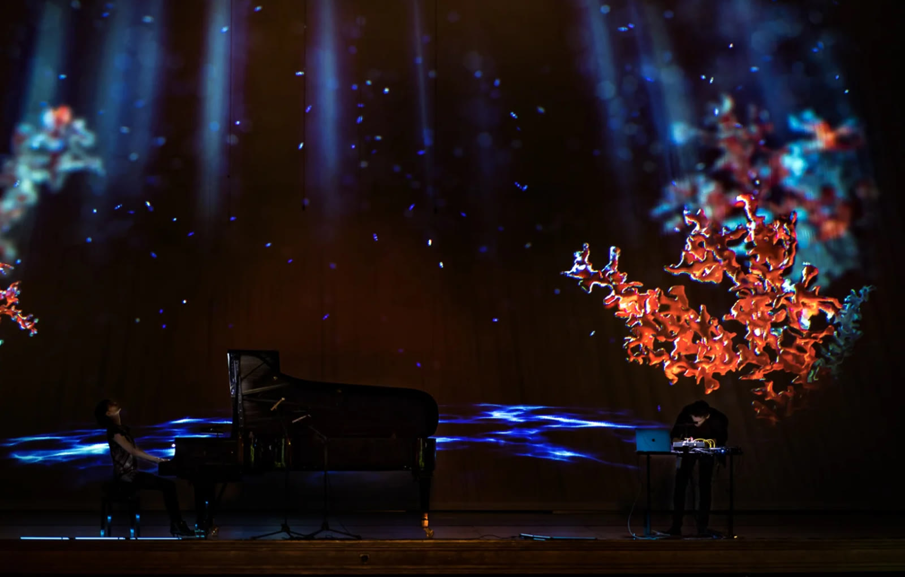

Suoni in estinzione
Un videomapping immersivo che ha trasformato il Teatro Massimo di Palermo, uno dei teatri lirici più grandi d'Europa, in una tela virtuale dove la narrazione prende vita. A rendere «Suoni in estinzione» uno spettacolo unico nel suo genere è anche la performance di design generativo che, relazionandosi alle armonie e alle disarmonie prodotte dal vivo dai musicisti, dà vita a paesaggi visivi e sonori che si sovrappongono in tempo reale alle animazioni e alle composizioni prodotte in studio.
Un'esperienza immersiva durante la quale i palchi, il soffitto e i teli olografici diventano superfici di proiezione, avvolgendo interamente il pubblico con luci, suoni e la musica composta per l'occasione ed eseguita dal vivo da Giovanni Magaglio e Giulia Tagliavia.


